Disposable pictures from a running isolated Paseo 0.14.0 (own home, port, fake op and security), the plugin built from a throwaway copy of main 6709c72 (today-*) and of main plus the proposed change (preview-*). The sidebar shows this Mac's host name; working evidence, not docs pictures.
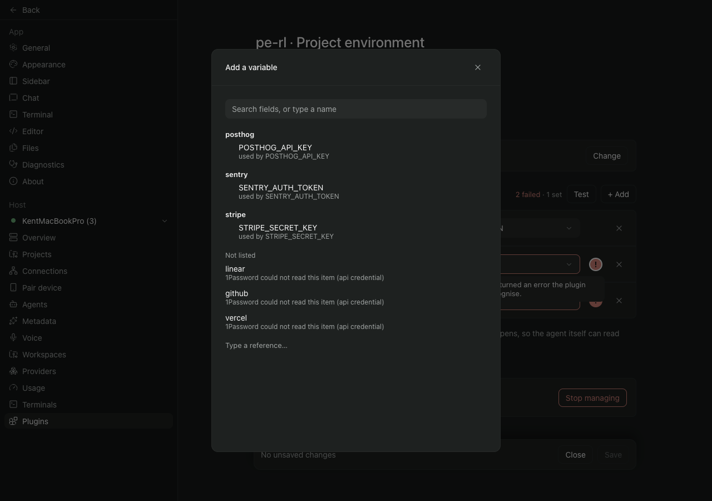
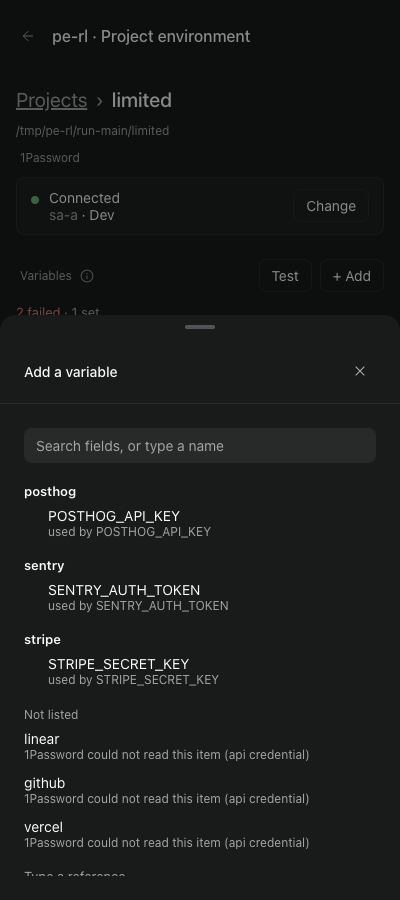
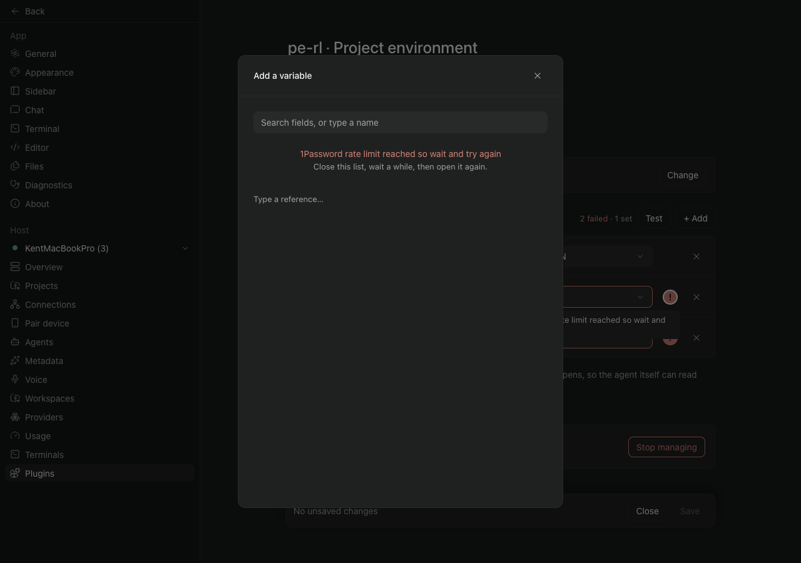
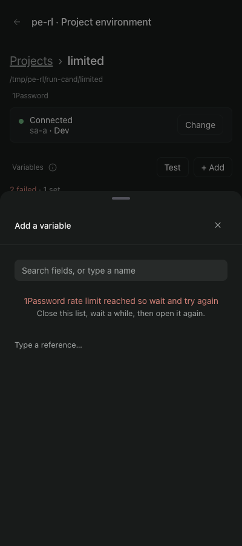
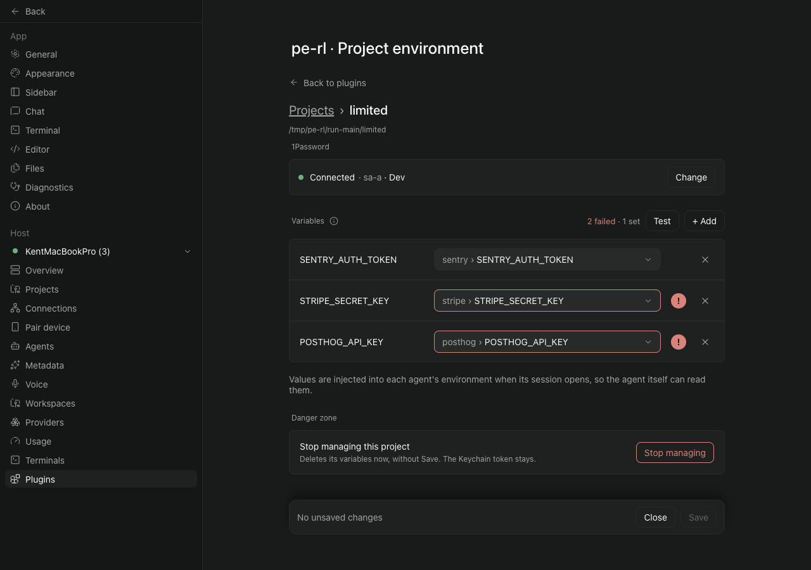
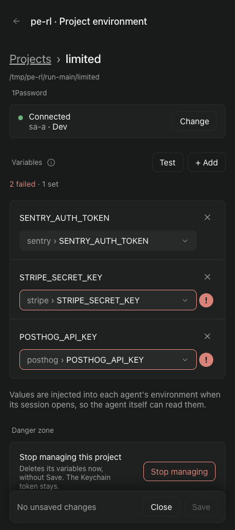
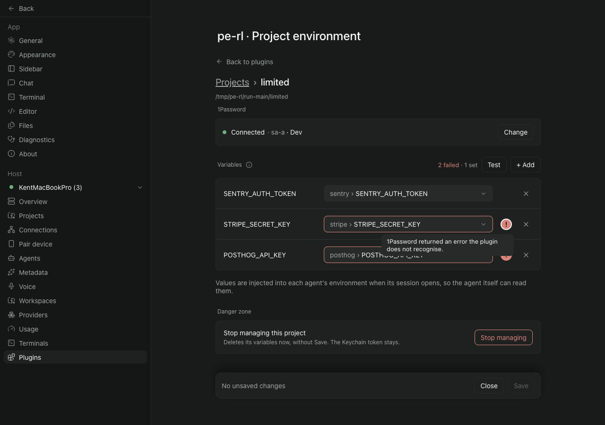
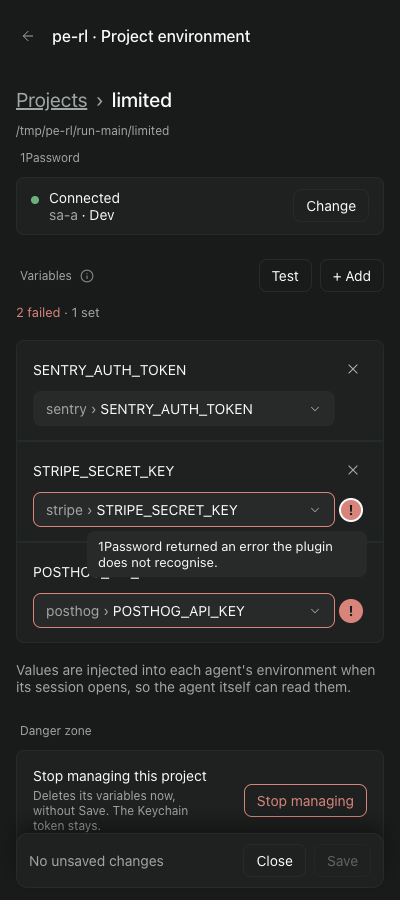
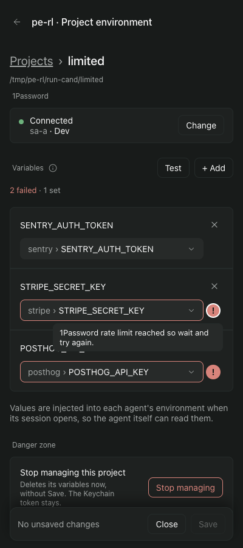
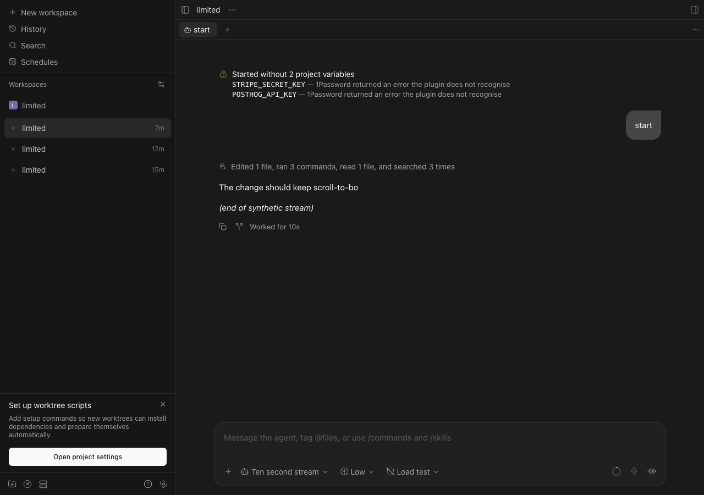
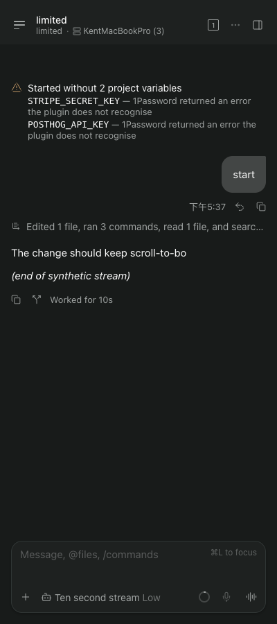
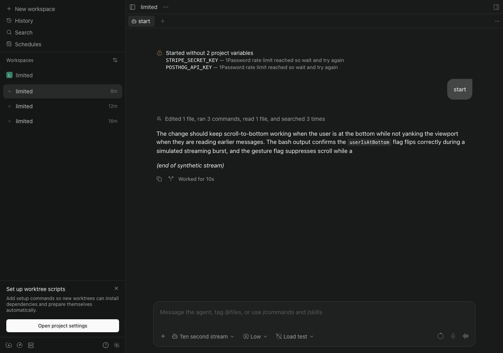
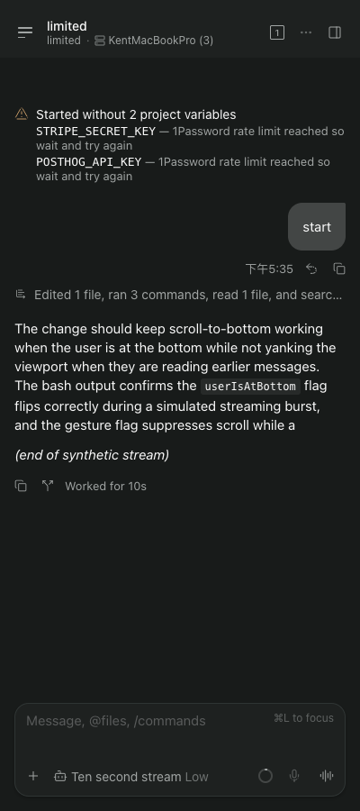